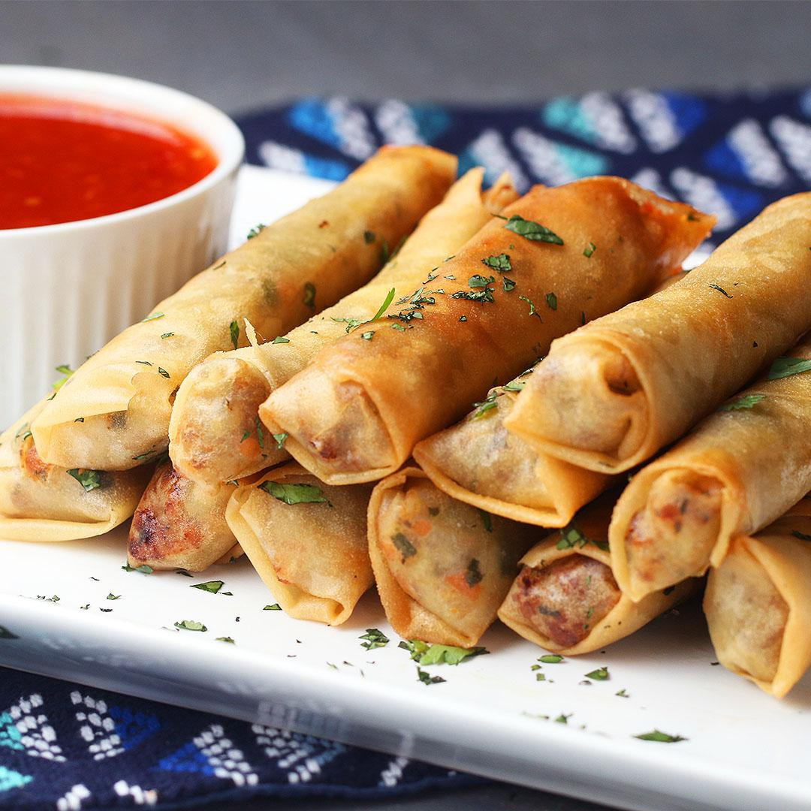
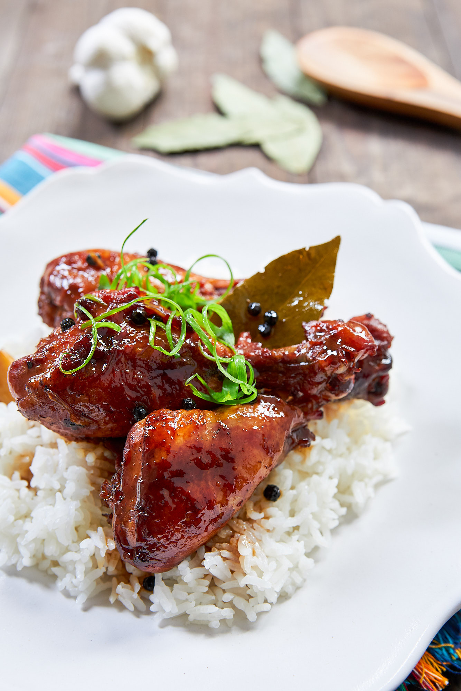
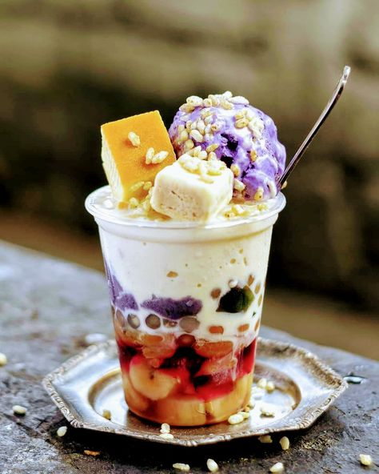

For starters, try the most popular Filipino dish Lumpia. Here we have mince meat, seasoned with great flavors, wrapped and fried in rice paper. Don't forget the sweet chili sauce that accompanies it!
Moving on to the entree, try the national dish of the Philippines Chicken Adobo. Soft and tender chicken cooked and simmered in adobo sauce and flavorings, it's to die for.
Don't forget to grab dessert! Be sure to taste one of the most famous Filipino dessert called Halo-halo. Ube ice-cream accompanied with beans, milk, shaved ice, condensed milk, and even flan; mix everything together and you'll have a tasty treat!
For more information on other dishes and its description, be sure to checkout the menu.
"Must try place for Filipino cuisine" - Bobby Flay
"I love their chicken adobo! Absolutely brilliant" - Gordon Ramsey
"I traveled from the Philippines to eat here because it went viral!" - Vice Ganda